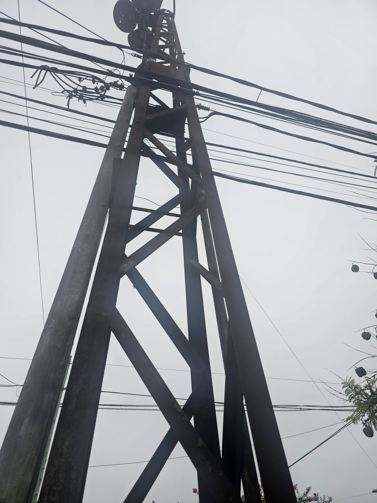
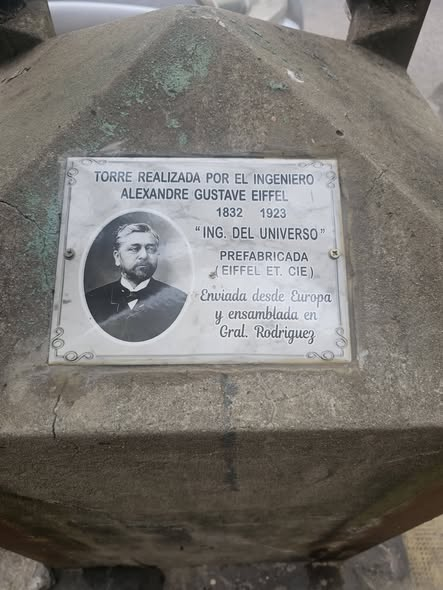

Antes, se podía escuchar la radio municipal a traves de estas torres con altavoces ubicadas por el centro de Rodríguez. Estas torres fueron, segun historiadores, construidas e instaladas a cargo del equipo dirigido por ingeniero civil francés Alexandre Gustave Eiffel
Eran torres prefabricadas de su consultora y constructora "Eiffel Et. Cie." (fundada en 1867), y traídas desde Europa para luego ser ensambladas acá
"Aunque se desconoce la fecha exacta de instalación, se estima que finales de siglo XIX y los objetivos eran servir de estructura de soporte de los primeros cableados eléctricos de la zona y/o la colocación de artefactos de iluminación pública. Destáquese, que los materiales y técnicas de montaje incluyen hierros remachados y ensamblados con la técnica de pudelación, el mismo modus operandi que las obras arquitectónicas ubicadas en Europa y Norteamérica." Museo Irigoyen en Google MapsEiffel con su constructora hizo muchos trabajos alrededor del mundo: hizo la estructura interna de la Estatua de la Libertad en Nueva York, EEUU; El Puente María Pía en Portugal; El edificio "El Forjador" en San Telmo, Argentina; Entre muchos otros.
